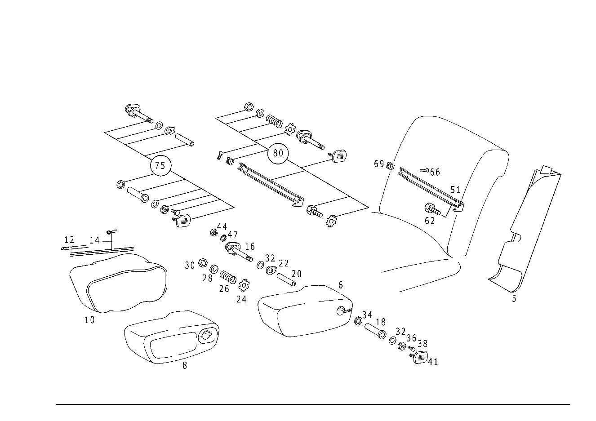

| № | Артикул | Название | Кол. | Примечание | Ограничение |
|---|---|---|---|---|---|
| 5 | A 116 910 09 39 | Обшивка | 1 | LEFT, RIGHT FRONT SEAT BACKREST Z 56.027/02 [022] 116.020 UP TO CHASSIS 049943 ALSO INSTALLED ON 050113,EXCEPT FOR SEE FOOTN. 23 [024] 116.024,025 UP TO CHASSIS 050150 ALSO INSTALLED ON 050203, EXCEPT FOR SEE FOOTN. 25 [026] 116.028,029 UP TO CHASSIS 028987 ALSO INSTALLED ON 029201, EXCEPT FOR SEE FOOTN. 27 [028] 116.032,033 UP TO CHASSIS 041786 ALSO INSTALLED ON 041848, EXCEPT FOR SEE FOOTN. 29 | |
| 5 | A 116 910 07 39 | Обшивка | 1 | LEFT, RIGHT FRONT SEAT BACKREST Z 56.027/04, Z 56.027/06 [022] 116.020 UP TO CHASSIS 049943 ALSO INSTALLED ON 050113,EXCEPT FOR SEE FOOTN. 23 [024] 116.024,025 UP TO CHASSIS 050150 ALSO INSTALLED ON 050203, EXCEPT FOR SEE FOOTN. 25 [026] 116.028,029 UP TO CHASSIS 028987 ALSO INSTALLED ON 029201, EXCEPT FOR SEE FOOTN. 27 [028] 116.032,033 UP TO CHASSIS 041786 ALSO INSTALLED ON 041848, EXCEPT FOR SEE FOOTN. 29 | |
| 5 | A 123 910 24 39 | Обшивка | 1 | СПРАВА, ЛЕВОЕ СИДЕН. Z 56.027/02, Z 56.027/08 [030] 116.020 FROM CHASSIS 049944 EXCEPT FOR 050113, ALSO INSTALLED ON SEE FOOTN. 23 [031] 116.024,025 FROM CHASSIS 050151 EXCEPT 050203, ALSO INSTALLED ON SEE FOOTN. 25 [032] 116.028,029 FROM CHASSIS 028988 EXCEPT 029201, ALSO INSTALLED ON SEE FOOTN. 27 [033] 116.032,033 FROM CHASSIS 041787 EXCEPT 041848, ALSO INSTALLED ON SEE FOOTN. 29 [013] BLACK NO.9007 CODE 261;BLACK NO. 9028 CODE 201;BLUE NO. 5020 CODE 262;BLUE NO.5045 CODE 202 | |
| 5 | A 123 910 26 39 | Обшивка | 1 | СПРАВА, ЛЕВОЕ СИДЕН. Z 56.027/04, Z 56.027/06, Z 56.027/10 [030] 116.020 FROM CHASSIS 049944 EXCEPT FOR 050113, ALSO INSTALLED ON SEE FOOTN. 23 [031] 116.024,025 FROM CHASSIS 050151 EXCEPT 050203, ALSO INSTALLED ON SEE FOOTN. 25 [032] 116.028,029 FROM CHASSIS 028988 EXCEPT 029201, ALSO INSTALLED ON SEE FOOTN. 27 [033] 116.032,033 FROM CHASSIS 041787 EXCEPT 041848, ALSO INSTALLED ON SEE FOOTN. 29 [009] BLACK NO.9007 CODE 101,161,401,461;DARK-BLUE NO. 5020 CODE 162,462;BLUE NO. 5045 CODE 102,402 | |
| 5 | A 123 910 26 39 | Обшивка | 1 | СПРАВА, ЛЕВОЕ СИДЕН. Z 56.027/11 [009] BLACK NO.9007 CODE 101,161,401,461;DARK-BLUE NO. 5020 CODE 162,462;BLUE NO. 5045 CODE 102,402 | |
| 6 | A 116 970 05 30 | ПОДЛОКОТНИК ОТКИДН. | 1 | НА СИД.ВОДИТЕЛЯ СПРАВА Z 56.027/01 [022] 116.020 UP TO CHASSIS 049943 ALSO INSTALLED ON 050113,EXCEPT FOR SEE FOOTN. 23 [024] 116.024,025 UP TO CHASSIS 050150 ALSO INSTALLED ON 050203, EXCEPT FOR SEE FOOTN. 25 [026] 116.028,029 UP TO CHASSIS 028987 ALSO INSTALLED ON 029201, EXCEPT FOR SEE FOOTN. 27 [028] 116.032,033 UP TO CHASSIS 041786 ALSO INSTALLED ON 041848, EXCEPT FOR SEE FOOTN. 29 [036] BLACK NO 9017 CODE 061,361;BLUE NO 5038 CODE 062,362;MAHOGANY NO 8178 CODE 063,363;BEIGE NO 8177 CODE 064,364;PARCHMENT NO 8179 CODE 065,365 | |
| 6 | A 116 970 54 30 | ПОДЛОКОТНИК ОТКИДН. | 1 | НА СИД. ВОДИТЕЛЯ СЛЕВА Z 56.027/01 [030] 116.020 FROM CHASSIS 049944 EXCEPT FOR 050113, ALSO INSTALLED ON SEE FOOTN. 23 [031] 116.024,025 FROM CHASSIS 050151 EXCEPT 050203, ALSO INSTALLED ON SEE FOOTN. 25 [032] 116.028,029 FROM CHASSIS 028988 EXCEPT 029201, ALSO INSTALLED ON SEE FOOTN. 27 [033] 116.032,033 FROM CHASSIS 041787 EXCEPT 041848, ALSO INSTALLED ON SEE FOOTN. 29 [038] BLACK NO.9027 CODE 001,301 BLUE NO.5049 CODE 002,302 PARCHMENT NO.8223 CODE 005,305 TOBACCO NO.8221 CODE 003,303 BAMBOO NO.8222 CODE 004,304 MOSS NO 6058 CODE 006,306 | |
| 6 | A 116 970 07 30 | ПОДЛОКОТНИК ОТКИДН. | 1 | НА СИД.ВОДИТЕЛЯ СПРАВА Z 56.027/02 [022] 116.020 UP TO CHASSIS 049943 ALSO INSTALLED ON 050113,EXCEPT FOR SEE FOOTN. 23 [024] 116.024,025 UP TO CHASSIS 050150 ALSO INSTALLED ON 050203, EXCEPT FOR SEE FOOTN. 25 [026] 116.028,029 UP TO CHASSIS 028987 ALSO INSTALLED ON 029201, EXCEPT FOR SEE FOOTN. 27 [028] 116.032,033 UP TO CHASSIS 041786 ALSO INSTALLED ON 041848, EXCEPT FOR SEE FOOTN. 29 [013] BLACK NO.9007 CODE 261;BLACK NO. 9028 CODE 201;BLUE NO. 5020 CODE 262;BLUE NO.5045 CODE 202 | |
| 6 | A 116 970 56 30 | ПОДЛОКОТНИК ОТКИДН. | 1 | НА СИД. ВОДИТЕЛЯ СЛЕВА Z 56.027/02 [030] 116.020 FROM CHASSIS 049944 EXCEPT FOR 050113, ALSO INSTALLED ON SEE FOOTN. 23 [031] 116.024,025 FROM CHASSIS 050151 EXCEPT 050203, ALSO INSTALLED ON SEE FOOTN. 25 [032] 116.028,029 FROM CHASSIS 028988 EXCEPT 029201, ALSO INSTALLED ON SEE FOOTN. 27 [033] 116.032,033 FROM CHASSIS 041787 EXCEPT 041848, ALSO INSTALLED ON SEE FOOTN. 29 [013] BLACK NO.9007 CODE 261;BLACK NO. 9028 CODE 201;BLUE NO. 5020 CODE 262;BLUE NO.5045 CODE 202 | |
| 6 | A 116 970 08 30 | ПОДЛОКОТНИК ОТКИДН. | 1 | НА СИД.ВОДИТЕЛЯ СПРАВА Z 56.027/03, Z 56.027/06 [022] 116.020 UP TO CHASSIS 049943 ALSO INSTALLED ON 050113,EXCEPT FOR SEE FOOTN. 23 [024] 116.024,025 UP TO CHASSIS 050150 ALSO INSTALLED ON 050203, EXCEPT FOR SEE FOOTN. 25 [026] 116.028,029 UP TO CHASSIS 028987 ALSO INSTALLED ON 029201, EXCEPT FOR SEE FOOTN. 27 [028] 116.032,033 UP TO CHASSIS 041786 ALSO INSTALLED ON 041848, EXCEPT FOR SEE FOOTN. 29 [009] BLACK NO.9007 CODE 101,161,401,461;DARK-BLUE NO. 5020 CODE 162,462;BLUE NO. 5045 CODE 102,402 | |
| 6 | A 116 970 52 30 | ПОДЛОКОТНИК ОТКИДН. | 1 | НА СИД. ВОДИТЕЛЯ СЛЕВА Z 56.027/03, Z 56.027/06 [030] 116.020 FROM CHASSIS 049944 EXCEPT FOR 050113, ALSO INSTALLED ON SEE FOOTN. 23 [031] 116.024,025 FROM CHASSIS 050151 EXCEPT 050203, ALSO INSTALLED ON SEE FOOTN. 25 [032] 116.028,029 FROM CHASSIS 028988 EXCEPT 029201, ALSO INSTALLED ON SEE FOOTN. 27 [033] 116.032,033 FROM CHASSIS 041787 EXCEPT 041848, ALSO INSTALLED ON SEE FOOTN. 29 [009] BLACK NO.9007 CODE 101,161,401,461;DARK-BLUE NO. 5020 CODE 162,462;BLUE NO. 5045 CODE 102,402 | |
| 6 | A 116 970 62 30 | ПОДЛОКОТНИК ОТКИДН. | 1 | НА СИД. ВОДИТЕЛЯ СЛЕВА Z 56.027/07 [003] BLACK NO.9017 CODE 061,361;BLACK NO. 9027 CODE 001,301;BLUE NO. 5038 CODE 062,362;BLUE NO. 5049 CODE 002,302;MAHOGANY NO. 8178 CODE 063,363 | |
| 6 | A 116 970 64 30 | ПОДЛОКОТНИК ОТКИДН. | 1 | НА СИД. ВОДИТЕЛЯ СЛЕВА Z 56.027/08 [013] BLACK NO.9007 CODE 261;BLACK NO. 9028 CODE 201;BLUE NO. 5020 CODE 262;BLUE NO.5045 CODE 202 | |
| 6 | A 116 970 66 30 | ПОДЛОКОТНИК ОТКИДН. | 1 | НА СИД. ВОДИТЕЛЯ СЛЕВА Z 56.027/10 [006] ANTHRACITE-GREY NO.7066 CODE 961;ANTHRAZIT NO. 7081 CODE 901;BLUE NO. 5032 CODE 962;BLUE NO. 5050 CODE 902;MAHOGANY NO. 8150 CODE 963;BEIGE NO. 8149 CODE 964 | |
| 6 | A 116 970 06 30 | ПОДЛОКОТНИК ОТКИДН. | 1 | НА СИД.ВОДИТЕЛЯ СПРАВА Z 56.027/04 [022] 116.020 UP TO CHASSIS 049943 ALSO INSTALLED ON 050113,EXCEPT FOR SEE FOOTN. 23 [024] 116.024,025 UP TO CHASSIS 050150 ALSO INSTALLED ON 050203, EXCEPT FOR SEE FOOTN. 25 [026] 116.028,029 UP TO CHASSIS 028987 ALSO INSTALLED ON 029201, EXCEPT FOR SEE FOOTN. 27 [028] 116.032,033 UP TO CHASSIS 041786 ALSO INSTALLED ON 041848, EXCEPT FOR SEE FOOTN. 29 [006] ANTHRACITE-GREY NO.7066 CODE 961;ANTHRAZIT NO. 7081 CODE 901;BLUE NO. 5032 CODE 962;BLUE NO. 5050 CODE 902;MAHOGANY NO. 8150 CODE 963;BEIGE NO. 8149 CODE 964 | |
| 6 | A 116 970 58 30 | ПОДЛОКОТНИК ОТКИДН. | 1 | НА СИД. ВОДИТЕЛЯ СЛЕВА Z 56.027/04 [030] 116.020 FROM CHASSIS 049944 EXCEPT FOR 050113, ALSO INSTALLED ON SEE FOOTN. 23 [031] 116.024,025 FROM CHASSIS 050151 EXCEPT 050203, ALSO INSTALLED ON SEE FOOTN. 25 [032] 116.028,029 FROM CHASSIS 028988 EXCEPT 029201, ALSO INSTALLED ON SEE FOOTN. 27 [033] 116.032,033 FROM CHASSIS 041787 EXCEPT 041848, ALSO INSTALLED ON SEE FOOTN. 29 [006] ANTHRACITE-GREY NO.7066 CODE 961;ANTHRAZIT NO. 7081 CODE 901;BLUE NO. 5032 CODE 962;BLUE NO. 5050 CODE 902;MAHOGANY NO. 8150 CODE 963;BEIGE NO. 8149 CODE 964 | |
| 6 | A 116 970 60 30 | ПОДЛОКОТНИК ОТКИДН. | 1 | Z 56.027/11 [009] BLACK NO.9007 CODE 101,161,401,461;DARK-BLUE NO. 5020 CODE 162,462;BLUE NO. 5045 CODE 102,402 | |
| 8 | A 116 970 02 20 | - ПОДШИПНИК | 1 | НА СИД.ВОДИТЕЛЯ СПРАВА Z 56.027/01, Z 56.027/02, Z 56.027/03, Z 56.027/04, Z 56.027/06 [022] 116.020 UP TO CHASSIS 049943 ALSO INSTALLED ON 050113,EXCEPT FOR SEE FOOTN. 23 [024] 116.024,025 UP TO CHASSIS 050150 ALSO INSTALLED ON 050203, EXCEPT FOR SEE FOOTN. 25 [026] 116.028,029 UP TO CHASSIS 028987 ALSO INSTALLED ON 029201, EXCEPT FOR SEE FOOTN. 27 [028] 116.032,033 UP TO CHASSIS 041786 ALSO INSTALLED ON 041848, EXCEPT FOR SEE FOOTN. 29 | |
| 8 | A 116 970 09 20 | - ПОДШИПНИК | 1 | НА СИД. ВОДИТЕЛЯ СЛЕВА Z 56.027/01, Z 56.027/02, Z 56.027/03, Z 56.027/04, Z 56.027/06 [030] 116.020 FROM CHASSIS 049944 EXCEPT FOR 050113, ALSO INSTALLED ON SEE FOOTN. 23 [031] 116.024,025 FROM CHASSIS 050151 EXCEPT 050203, ALSO INSTALLED ON SEE FOOTN. 25 [032] 116.028,029 FROM CHASSIS 028988 EXCEPT 029201, ALSO INSTALLED ON SEE FOOTN. 27 [033] 116.032,033 FROM CHASSIS 041787 EXCEPT 041848, ALSO INSTALLED ON SEE FOOTN. 29 | |
| 8 | A 116 970 10 20 | - ПОДШИПНИК | 1 | НА СИД. ВОДИТЕЛЯ СЛЕВА Z 56.027/08, Z 56.027/09 | |
| 8 | A 116 970 10 20 | - ПОДШИПНИК | 1 | Z 56.027/11, Z 56.027/12, Z 56.027/13 | |
| 10 | A 116 970 05 47 | - ОБИВКА | 1 | Z 56.027/01 [022] 116.020 UP TO CHASSIS 049943 ALSO INSTALLED ON 050113,EXCEPT FOR SEE FOOTN. 23 [024] 116.024,025 UP TO CHASSIS 050150 ALSO INSTALLED ON 050203, EXCEPT FOR SEE FOOTN. 25 [026] 116.028,029 UP TO CHASSIS 028987 ALSO INSTALLED ON 029201, EXCEPT FOR SEE FOOTN. 27 [028] 116.032,033 UP TO CHASSIS 041786 ALSO INSTALLED ON 041848, EXCEPT FOR SEE FOOTN. 29 [036] BLACK NO 9017 CODE 061,361;BLUE NO 5038 CODE 062,362;MAHOGANY NO 8178 CODE 063,363;BEIGE NO 8177 CODE 064,364;PARCHMENT NO 8179 CODE 065,365 | |
| 10 | A 116 970 41 47 | - ОБИВКА | 1 | Z 56.027/01 [030] 116.020 FROM CHASSIS 049944 EXCEPT FOR 050113, ALSO INSTALLED ON SEE FOOTN. 23 [031] 116.024,025 FROM CHASSIS 050151 EXCEPT 050203, ALSO INSTALLED ON SEE FOOTN. 25 [032] 116.028,029 FROM CHASSIS 028988 EXCEPT 029201, ALSO INSTALLED ON SEE FOOTN. 27 [033] 116.032,033 FROM CHASSIS 041787 EXCEPT 041848, ALSO INSTALLED ON SEE FOOTN. 29 [038] BLACK NO.9027 CODE 001,301 BLUE NO.5049 CODE 002,302 PARCHMENT NO.8223 CODE 005,305 TOBACCO NO.8221 CODE 003,303 BAMBOO NO.8222 CODE 004,304 MOSS NO 6058 CODE 006,306 | |
| 10 | A 116 970 07 47 | - ОБИВКА | 1 | Z 56.027/02 [022] 116.020 UP TO CHASSIS 049943 ALSO INSTALLED ON 050113,EXCEPT FOR SEE FOOTN. 23 [024] 116.024,025 UP TO CHASSIS 050150 ALSO INSTALLED ON 050203, EXCEPT FOR SEE FOOTN. 25 [026] 116.028,029 UP TO CHASSIS 028987 ALSO INSTALLED ON 029201, EXCEPT FOR SEE FOOTN. 27 [028] 116.032,033 UP TO CHASSIS 041786 ALSO INSTALLED ON 041848, EXCEPT FOR SEE FOOTN. 29 [013] BLACK NO.9007 CODE 261;BLACK NO. 9028 CODE 201;BLUE NO. 5020 CODE 262;BLUE NO.5045 CODE 202 | |
| 10 | A 116 970 39 47 | - ОБИВКА | 1 | Z 56.027/02 [030] 116.020 FROM CHASSIS 049944 EXCEPT FOR 050113, ALSO INSTALLED ON SEE FOOTN. 23 [031] 116.024,025 FROM CHASSIS 050151 EXCEPT 050203, ALSO INSTALLED ON SEE FOOTN. 25 [032] 116.028,029 FROM CHASSIS 028988 EXCEPT 029201, ALSO INSTALLED ON SEE FOOTN. 27 [033] 116.032,033 FROM CHASSIS 041787 EXCEPT 041848, ALSO INSTALLED ON SEE FOOTN. 29 [013] BLACK NO.9007 CODE 261;BLACK NO. 9028 CODE 201;BLUE NO. 5020 CODE 262;BLUE NO.5045 CODE 202 | |
| 10 | A 116 970 08 47 | - ОБИВКА | 1 | Z 56.027/03, Z 56.027/06 [022] 116.020 UP TO CHASSIS 049943 ALSO INSTALLED ON 050113,EXCEPT FOR SEE FOOTN. 23 [024] 116.024,025 UP TO CHASSIS 050150 ALSO INSTALLED ON 050203, EXCEPT FOR SEE FOOTN. 25 [026] 116.028,029 UP TO CHASSIS 028987 ALSO INSTALLED ON 029201, EXCEPT FOR SEE FOOTN. 27 [028] 116.032,033 UP TO CHASSIS 041786 ALSO INSTALLED ON 041848, EXCEPT FOR SEE FOOTN. 29 [009] BLACK NO.9007 CODE 101,161,401,461;DARK-BLUE NO. 5020 CODE 162,462;BLUE NO. 5045 CODE 102,402 | |
| 10 | A 116 970 37 47 | - ОБИВКА | 1 | Z 56.027/03, Z 56.027/06 [030] 116.020 FROM CHASSIS 049944 EXCEPT FOR 050113, ALSO INSTALLED ON SEE FOOTN. 23 [031] 116.024,025 FROM CHASSIS 050151 EXCEPT 050203, ALSO INSTALLED ON SEE FOOTN. 25 [032] 116.028,029 FROM CHASSIS 028988 EXCEPT 029201, ALSO INSTALLED ON SEE FOOTN. 27 [033] 116.032,033 FROM CHASSIS 041787 EXCEPT 041848, ALSO INSTALLED ON SEE FOOTN. 29 [009] BLACK NO.9007 CODE 101,161,401,461;DARK-BLUE NO. 5020 CODE 162,462;BLUE NO. 5045 CODE 102,402 | |
| 10 | A 116 970 45 47 | - ОБИВКА | 1 | Z 56.027/07 [003] BLACK NO.9017 CODE 061,361;BLACK NO. 9027 CODE 001,301;BLUE NO. 5038 CODE 062,362;BLUE NO. 5049 CODE 002,302;MAHOGANY NO. 8178 CODE 063,363 | |
| 10 | A 116 970 42 47 | - ОБИВКА | 1 | Z 56.027/08 [013] BLACK NO.9007 CODE 261;BLACK NO. 9028 CODE 201;BLUE NO. 5020 CODE 262;BLUE NO.5045 CODE 202 | |
| 10 | A 116 970 44 47 | - ОБИВКА | 1 | Z 56.027/10 [006] ANTHRACITE-GREY NO.7066 CODE 961;ANTHRAZIT NO. 7081 CODE 901;BLUE NO. 5032 CODE 962;BLUE NO. 5050 CODE 902;MAHOGANY NO. 8150 CODE 963;BEIGE NO. 8149 CODE 964 | |
| 10 | A 116 970 06 47 | - ОБИВКА | 1 | Z 56.027/04 [022] 116.020 UP TO CHASSIS 049943 ALSO INSTALLED ON 050113,EXCEPT FOR SEE FOOTN. 23 [024] 116.024,025 UP TO CHASSIS 050150 ALSO INSTALLED ON 050203, EXCEPT FOR SEE FOOTN. 25 [026] 116.028,029 UP TO CHASSIS 028987 ALSO INSTALLED ON 029201, EXCEPT FOR SEE FOOTN. 27 [028] 116.032,033 UP TO CHASSIS 041786 ALSO INSTALLED ON 041848, EXCEPT FOR SEE FOOTN. 29 [006] ANTHRACITE-GREY NO.7066 CODE 961;ANTHRAZIT NO. 7081 CODE 901;BLUE NO. 5032 CODE 962;BLUE NO. 5050 CODE 902;MAHOGANY NO. 8150 CODE 963;BEIGE NO. 8149 CODE 964 | |
| 10 | A 116 970 40 47 | - ОБИВКА | 1 | Z 56.027/04 [030] 116.020 FROM CHASSIS 049944 EXCEPT FOR 050113, ALSO INSTALLED ON SEE FOOTN. 23 [031] 116.024,025 FROM CHASSIS 050151 EXCEPT 050203, ALSO INSTALLED ON SEE FOOTN. 25 [032] 116.028,029 FROM CHASSIS 028988 EXCEPT 029201, ALSO INSTALLED ON SEE FOOTN. 27 [033] 116.032,033 FROM CHASSIS 041787 EXCEPT 041848, ALSO INSTALLED ON SEE FOOTN. 29 [006] ANTHRACITE-GREY NO.7066 CODE 961;ANTHRAZIT NO. 7081 CODE 901;BLUE NO. 5032 CODE 962;BLUE NO. 5050 CODE 902;MAHOGANY NO. 8150 CODE 963;BEIGE NO. 8149 CODE 964 | |
| 10 | A 116 970 43 47 | - ОБИВКА | 1 | Z 56.027/11 [009] BLACK NO.9007 CODE 101,161,401,461;DARK-BLUE NO. 5020 CODE 162,462;BLUE NO. 5045 CODE 102,402 | |
| 12 | A 000 987 02 81 | - УПЛОТНИТЕЛЬНЫЙ ШНУР | 2 | 2 X 990 = 1980 MM Z 56.027/04 [006] ANTHRACITE-GREY NO.7066 CODE 961;ANTHRAZIT NO. 7081 CODE 901;BLUE NO. 5032 CODE 962;BLUE NO. 5050 CODE 902;MAHOGANY NO. 8150 CODE 963;BEIGE NO. 8149 CODE 964 [019] ЗАКАЗЫВАТЬ ПОГОННЫМИ МЕТРАМИ [020] 116.020 UP TO CHASSIS 049943;116.024,025 UP TO CHASSIS 050150;116.028,029 UP TO CHASSIS 028987;116.032,033 UP TO CHASSIS 041786 | |
| 14 | A 001 987 02 30 | - Окантовка | 2 | 2 X 990 = 1980 MM Z 56.027/01, Z 56.027/03, Z 56.027/06 [404] ЗАКАЗЫВАТЬ ПОГОННЫМИ МЕТРАМИ [019] ЗАКАЗЫВАТЬ ПОГОННЫМИ МЕТРАМИ [016] BLACK NO. 9000 CODE 001,061,101,161,301,361,401,461,901;BLUE NO.5020 CODE 062,162,362,462;BLUE NO.5045 CODE 002,102,302,402,902;MAHOGANY NO.8100 CODE 063,163,363,463 | |
| 14 | A 001 987 02 30 | Окантовка | 2 | 2 X 990 = 1980 MM Z 56.027/02, Z 56.027/04 [404] ЗАКАЗЫВАТЬ ПОГОННЫМИ МЕТРАМИ [019] ЗАКАЗЫВАТЬ ПОГОННЫМИ МЕТРАМИ [016] BLACK NO. 9000 CODE 001,061,101,161,301,361,401,461,901;BLUE NO.5020 CODE 062,162,362,462;BLUE NO.5045 CODE 002,102,302,402,902;MAHOGANY NO.8100 CODE 063,163,363,463 [021] 116.020 FROM CHASSIS 049944;116.024,025 FROM CHASSIS 050151;116.028,029 FROM CHASSIS 028988;116.032,033 FROM CHASSIS 041787 | |
| 16 | A 116 970 06 20 | Подшипник | 1 | НА СИД.ВОДИТЕЛЯ СПРАВА Z 56.027/01, Z 56.027/02, Z 56.027/03, Z 56.027/04, Z 56.027/06 [022] 116.020 UP TO CHASSIS 049943 ALSO INSTALLED ON 050113,EXCEPT FOR SEE FOOTN. 23 [024] 116.024,025 UP TO CHASSIS 050150 ALSO INSTALLED ON 050203, EXCEPT FOR SEE FOOTN. 25 [026] 116.028,029 UP TO CHASSIS 028987 ALSO INSTALLED ON 029201, EXCEPT FOR SEE FOOTN. 27 [028] 116.032,033 UP TO CHASSIS 041786 ALSO INSTALLED ON 041848, EXCEPT FOR SEE FOOTN. 29 | |
| 16 | A 116 970 07 20 | ПОДШИПНИК | 1 | НА СИД. ВОДИТЕЛЯ СЛЕВА Z 56.027/01, Z 56.027/02, Z 56.027/03, Z 56.027/04, Z 56.027/06 [030] 116.020 FROM CHASSIS 049944 EXCEPT FOR 050113, ALSO INSTALLED ON SEE FOOTN. 23 [031] 116.024,025 FROM CHASSIS 050151 EXCEPT 050203, ALSO INSTALLED ON SEE FOOTN. 25 [032] 116.028,029 FROM CHASSIS 028988 EXCEPT 029201, ALSO INSTALLED ON SEE FOOTN. 27 [033] 116.032,033 FROM CHASSIS 041787 EXCEPT 041848, ALSO INSTALLED ON SEE FOOTN. 29 | |
| 16 | A 116 970 07 20 | ПОДШИПНИК | 1 | НА СИД. ВОДИТЕЛЯ СЛЕВА Z 56.027/07, Z 56.027/08, Z 56.027/09, Z 56.027/10 | |
| 16 | A 116 970 07 20 | - ПОДШИПНИК | 1 | Z 56.027/11 | |
| 18 | A 116 973 00 37 | ПРОСТАВКА | 1 | AT RIGHT FRONT SEAT SUPPORT Z 56.027/01, Z 56.027/02, Z 56.027/03, Z 56.027/04, Z 56.027/06 [022] 116.020 UP TO CHASSIS 049943 ALSO INSTALLED ON 050113,EXCEPT FOR SEE FOOTN. 23 [024] 116.024,025 UP TO CHASSIS 050150 ALSO INSTALLED ON 050203, EXCEPT FOR SEE FOOTN. 25 [026] 116.028,029 UP TO CHASSIS 028987 ALSO INSTALLED ON 029201, EXCEPT FOR SEE FOOTN. 27 [028] 116.032,033 UP TO CHASSIS 041786 ALSO INSTALLED ON 041848, EXCEPT FOR SEE FOOTN. 29 | |
| 20 | N 040621 018200 | Изоляционный шланг | 1 | AT RIGHT FRONT SEAT SUPPORT Z 56.027/01, Z 56.027/02, Z 56.027/03, Z 56.027/04, Z 56.027/06 [404] ЗАКАЗЫВАТЬ ПОГОННЫМИ МЕТРАМИ [022] 116.020 UP TO CHASSIS 049943 ALSO INSTALLED ON 050113,EXCEPT FOR SEE FOOTN. 23 [024] 116.024,025 UP TO CHASSIS 050150 ALSO INSTALLED ON 050203, EXCEPT FOR SEE FOOTN. 25 [026] 116.028,029 UP TO CHASSIS 028987 ALSO INSTALLED ON 029201, EXCEPT FOR SEE FOOTN. 27 [028] 116.032,033 UP TO CHASSIS 041786 ALSO INSTALLED ON 041848, EXCEPT FOR SEE FOOTN. 29 [019] ЗАКАЗЫВАТЬ ПОГОННЫМИ МЕТРАМИ | |
| 22 | A 116 984 01 56 | Диск | 1 | AT RIGHT FRONT SEAT SUPPORT Z 56.027/01, Z 56.027/02, Z 56.027/03, Z 56.027/04, Z 56.027/06 [022] 116.020 UP TO CHASSIS 049943 ALSO INSTALLED ON 050113,EXCEPT FOR SEE FOOTN. 23 [024] 116.024,025 UP TO CHASSIS 050150 ALSO INSTALLED ON 050203, EXCEPT FOR SEE FOOTN. 25 [026] 116.028,029 UP TO CHASSIS 028987 ALSO INSTALLED ON 029201, EXCEPT FOR SEE FOOTN. 27 [028] 116.032,033 UP TO CHASSIS 041786 ALSO INSTALLED ON 041848, EXCEPT FOR SEE FOOTN. 29 | |
| 24 | A 123 987 01 41 | КОЛЬЦО РЕЗИНОВОЕ | 4 | AT LEFT FRONT SEAT SUPPORT Z 56.027/01, Z 56.027/02, Z 56.027/03, Z 56.027/04, Z 56.027/06 [030] 116.020 FROM CHASSIS 049944 EXCEPT FOR 050113, ALSO INSTALLED ON SEE FOOTN. 23 [031] 116.024,025 FROM CHASSIS 050151 EXCEPT 050203, ALSO INSTALLED ON SEE FOOTN. 25 [032] 116.028,029 FROM CHASSIS 028988 EXCEPT 029201, ALSO INSTALLED ON SEE FOOTN. 27 [033] 116.032,033 FROM CHASSIS 041787 EXCEPT 041848, ALSO INSTALLED ON SEE FOOTN. 29 | |
| 24 | A 123 987 01 41 | КОЛЬЦО РЕЗИНОВОЕ | 4 | AT LEFT FRONT SEAT SUPPORT Z 56.027/07, Z 56.027/08, Z 56.027/09, Z 56.027/10 | |
| 24 | A 123 987 01 41 | КОЛЬЦО РЕЗИНОВОЕ | 4 | Z 56.027/11 | |
| 26 | A 123 973 01 34 | пружина | 2 | AT LEFT FRONT SEAT SUPPORT Z 56.027/01, Z 56.027/02, Z 56.027/03, Z 56.027/04, Z 56.027/06 [030] 116.020 FROM CHASSIS 049944 EXCEPT FOR 050113, ALSO INSTALLED ON SEE FOOTN. 23 [031] 116.024,025 FROM CHASSIS 050151 EXCEPT 050203, ALSO INSTALLED ON SEE FOOTN. 25 [032] 116.028,029 FROM CHASSIS 028988 EXCEPT 029201, ALSO INSTALLED ON SEE FOOTN. 27 [033] 116.032,033 FROM CHASSIS 041787 EXCEPT 041848, ALSO INSTALLED ON SEE FOOTN. 29 | |
| 26 | A 123 973 01 34 | пружина | 2 | AT LEFT FRONT SEAT SUPPORT Z 56.027/07, Z 56.027/08, Z 56.027/09, Z 56.027/10 | |
| 26 | A 123 973 01 34 | пружина | 2 | Z 56.027/11 | |
| 28 | N 000125 006421 | Шайба | 2 | AT LEFT FRONT SEAT SUPPORT Z 56.027/01, Z 56.027/02, Z 56.027/03, Z 56.027/04, Z 56.027/06 [030] 116.020 FROM CHASSIS 049944 EXCEPT FOR 050113, ALSO INSTALLED ON SEE FOOTN. 23 [031] 116.024,025 FROM CHASSIS 050151 EXCEPT 050203, ALSO INSTALLED ON SEE FOOTN. 25 [032] 116.028,029 FROM CHASSIS 028988 EXCEPT 029201, ALSO INSTALLED ON SEE FOOTN. 27 [033] 116.032,033 FROM CHASSIS 041787 EXCEPT 041848, ALSO INSTALLED ON SEE FOOTN. 29 | |
| 28 | N 000125 006421 | Шайба | 2 | AT LEFT FRONT SEAT SUPPORT Z 56.027/07, Z 56.027/08, Z 56.027/09, Z 56.027/10 | |
| 28 | N 000125 006421 | Шайба | 2 | Z 56.027/11 | |
| 30 | N 000934 006007 | Гайка | 2 | НА СИД.ВОДИТЕЛЯ СПРАВА Z 56.027/01, Z 56.027/02, Z 56.027/03, Z 56.027/04, Z 56.027/06 [030] 116.020 FROM CHASSIS 049944 EXCEPT FOR 050113, ALSO INSTALLED ON SEE FOOTN. 23 [031] 116.024,025 FROM CHASSIS 050151 EXCEPT 050203, ALSO INSTALLED ON SEE FOOTN. 25 [032] 116.028,029 FROM CHASSIS 028988 EXCEPT 029201, ALSO INSTALLED ON SEE FOOTN. 27 [033] 116.032,033 FROM CHASSIS 041787 EXCEPT 041848, ALSO INSTALLED ON SEE FOOTN. 29 | |
| 30 | N 000934 006007 | Гайка | 2 | НА СИД.ВОДИТЕЛЯ СПРАВА Z 56.027/07, Z 56.027/08, Z 56.027/09, Z 56.027/10 | |
| 30 | N 000934 006007 | Гайка | 2 | Z 56.027/11 | |
| 32 | A 109 990 01 40 | Диск | 2 | AT RIGHT FRONT SEAT SUPPORT Z 56.027/01, Z 56.027/02, Z 56.027/03, Z 56.027/04, Z 56.027/06 [022] 116.020 UP TO CHASSIS 049943 ALSO INSTALLED ON 050113,EXCEPT FOR SEE FOOTN. 23 [024] 116.024,025 UP TO CHASSIS 050150 ALSO INSTALLED ON 050203, EXCEPT FOR SEE FOOTN. 25 [026] 116.028,029 UP TO CHASSIS 028987 ALSO INSTALLED ON 029201, EXCEPT FOR SEE FOOTN. 27 [028] 116.032,033 UP TO CHASSIS 041786 ALSO INSTALLED ON 041848, EXCEPT FOR SEE FOOTN. 29 | |
| 34 | A 109 987 00 41 | Диск | 1 | AT RIGHT FRONT SEAT SUPPORT Z 56.027/01, Z 56.027/02, Z 56.027/03, Z 56.027/04, Z 56.027/06 [022] 116.020 UP TO CHASSIS 049943 ALSO INSTALLED ON 050113,EXCEPT FOR SEE FOOTN. 23 [024] 116.024,025 UP TO CHASSIS 050150 ALSO INSTALLED ON 050203, EXCEPT FOR SEE FOOTN. 25 [026] 116.028,029 UP TO CHASSIS 028987 ALSO INSTALLED ON 029201, EXCEPT FOR SEE FOOTN. 27 [028] 116.032,033 UP TO CHASSIS 041786 ALSO INSTALLED ON 041848, EXCEPT FOR SEE FOOTN. 29 | |
| 36 | A 109 990 01 60 | гайка | 1 | AT RIGHT FRONT SEAT SUPPORT Z 56.027/01, Z 56.027/02, Z 56.027/03, Z 56.027/04, Z 56.027/06 [022] 116.020 UP TO CHASSIS 049943 ALSO INSTALLED ON 050113,EXCEPT FOR SEE FOOTN. 23 [024] 116.024,025 UP TO CHASSIS 050150 ALSO INSTALLED ON 050203, EXCEPT FOR SEE FOOTN. 25 [026] 116.028,029 UP TO CHASSIS 028987 ALSO INSTALLED ON 029201, EXCEPT FOR SEE FOOTN. 27 [028] 116.032,033 UP TO CHASSIS 041786 ALSO INSTALLED ON 041848, EXCEPT FOR SEE FOOTN. 29 | |
| 38 | N 000933 005036 | Винт | 1 | AT RIGHT FRONT SEAT SUPPORT Z 56.027/01, Z 56.027/02, Z 56.027/03, Z 56.027/04, Z 56.027/06 [022] 116.020 UP TO CHASSIS 049943 ALSO INSTALLED ON 050113,EXCEPT FOR SEE FOOTN. 23 [024] 116.024,025 UP TO CHASSIS 050150 ALSO INSTALLED ON 050203, EXCEPT FOR SEE FOOTN. 25 [026] 116.028,029 UP TO CHASSIS 028987 ALSO INSTALLED ON 029201, EXCEPT FOR SEE FOOTN. 27 [028] 116.032,033 UP TO CHASSIS 041786 ALSO INSTALLED ON 041848, EXCEPT FOR SEE FOOTN. 29 | |
| 41 | A 116 973 04 11 | Защитная пластина | 1 | Z 56.027/01, Z 56.027/02, Z 56.027/03, Z 56.027/04, Z 56.027/06, Z 56.027/07, Z 56.027/08, Z 56.027/09, Z 56.027/10 | |
| 41 | A 116 973 04 11 | Защитная пластина | 1 | Z 56.027/11 | |
| 44 | N 000439 018200 | Гайка | 1 | Z 56.027/01, Z 56.027/02, Z 56.027/03, Z 56.027/04, Z 56.027/06, Z 56.027/07, Z 56.027/08, Z 56.027/09, Z 56.027/10 | |
| 44 | N 000439 018200 | Гайка | 1 | Z 56.027/11 | |
| 47 | N 006797 019101 | Зубчатая шайба | 1 | Z 56.027/01, Z 56.027/02, Z 56.027/03, Z 56.027/04, Z 56.027/06, Z 56.027/07, Z 56.027/08, Z 56.027/09, Z 56.027/10 | |
| 47 | N 006797 019101 | Зубчатая шайба | 1 | Z 56.027/11 | |
| 51 | A 116 973 01 27 | ПЛАНКА | 1 | AT RIGHT FRONT SEAT BACKREST FRAME Z 56.027/01, Z 56.027/02, Z 56.027/03, Z 56.027/04, Z 56.027/06 [022] 116.020 UP TO CHASSIS 049943 ALSO INSTALLED ON 050113,EXCEPT FOR SEE FOOTN. 23 [024] 116.024,025 UP TO CHASSIS 050150 ALSO INSTALLED ON 050203, EXCEPT FOR SEE FOOTN. 25 [026] 116.028,029 UP TO CHASSIS 028987 ALSO INSTALLED ON 029201, EXCEPT FOR SEE FOOTN. 27 [028] 116.032,033 UP TO CHASSIS 041786 ALSO INSTALLED ON 041848, EXCEPT FOR SEE FOOTN. 29 [002] 116.020 FROM CHASSIS 007044;116.024 FROM CHASSIS 007578;116.028 FROM CHASSIS 007807;116.032,033 FROM CHASSIS 003686 | |
| 51 | A 123 973 00 27 | ПЛАНКА | 1 | AT LEFT FRONT SEAT BACKREST FRAME Z 56.027/01, Z 56.027/02, Z 56.027/03, Z 56.027/04, Z 56.027/06 [030] 116.020 FROM CHASSIS 049944 EXCEPT FOR 050113, ALSO INSTALLED ON SEE FOOTN. 23 [031] 116.024,025 FROM CHASSIS 050151 EXCEPT 050203, ALSO INSTALLED ON SEE FOOTN. 25 [032] 116.028,029 FROM CHASSIS 028988 EXCEPT 029201, ALSO INSTALLED ON SEE FOOTN. 27 [033] 116.032,033 FROM CHASSIS 041787 EXCEPT 041848, ALSO INSTALLED ON SEE FOOTN. 29 | |
| 51 | A 123 973 00 27 | ПЛАНКА | 1 | AT LEFT FRONT SEAT BACKREST FRAME Z 56.027/07, Z 56.027/08, Z 56.027/09, Z 56.027/10 | |
| 51 | A 123 973 00 27 | ПЛАНКА | 1 | AT LEFT FRONT SEAT BACKREST FRAME Z 56.027/11 | |
| 62 | N 914114 006000 | Винт | 1 | Z 56.027/01, Z 56.027/02, Z 56.027/03, Z 56.027/04, Z 56.027/06 [002] 116.020 FROM CHASSIS 007044;116.024 FROM CHASSIS 007578;116.028 FROM CHASSIS 007807;116.032,033 FROM CHASSIS 003686 | |
| 62 | N 914114 006000 | Винт | 1 | Z 56.027/07, Z 56.027/08, Z 56.027/09, Z 56.027/10 | |
| 62 | N 914114 006000 | Винт | 1 | Z 56.027/11 | |
| 66 | N 000965 006001 | Винт | 2 | Z 56.027/01, Z 56.027/02, Z 56.027/03, Z 56.027/04, Z 56.027/06 [002] 116.020 FROM CHASSIS 007044;116.024 FROM CHASSIS 007578;116.028 FROM CHASSIS 007807;116.032,033 FROM CHASSIS 003686 | |
| 66 | N 000965 006001 | Винт | 2 | Z 56.027/07, Z 56.027/08, Z 56.027/09, Z 56.027/10 | |
| 66 | N 000965 006001 | Винт | 2 | Z 56.027/11 | |
| 69 | A 000 990 88 91 | Пружинная гайка | 2 | Z 56.027/01, Z 56.027/02, Z 56.027/03, Z 56.027/04, Z 56.027/06 [002] 116.020 FROM CHASSIS 007044;116.024 FROM CHASSIS 007578;116.028 FROM CHASSIS 007807;116.032,033 FROM CHASSIS 003686 | |
| 69 | A 000 990 88 91 | Пружинная гайка | 2 | Z 56.027/07, Z 56.027/08, Z 56.027/09, Z 56.027/10 | |
| 69 | A 000 990 88 91 | Пружинная гайка | 2 | Z 56.027/11 | |
| 75 | A 116 970 13 30 | КРЕП. МАТЕРИАЛ | 1 | ARMREST TO RIGHT FRONT SEAT Z 56.027/01, Z 56.027/02, Z 56.027/03, Z 56.027/04, Z 56.027/06 [022] 116.020 UP TO CHASSIS 049943 ALSO INSTALLED ON 050113,EXCEPT FOR SEE FOOTN. 23 [024] 116.024,025 UP TO CHASSIS 050150 ALSO INSTALLED ON 050203, EXCEPT FOR SEE FOOTN. 25 [026] 116.028,029 UP TO CHASSIS 028987 ALSO INSTALLED ON 029201, EXCEPT FOR SEE FOOTN. 27 [028] 116.032,033 UP TO CHASSIS 041786 ALSO INSTALLED ON 041848, EXCEPT FOR SEE FOOTN. 29 | |
| 80 | A 116 970 00 00 | КРЕП. МАТЕРИАЛ | 1 | ARMREST TO LEFT FRONT SEAT Z 56.027/01, Z 56.027/02, Z 56.027/03, Z 56.027/04, Z 56.027/06 [030] 116.020 FROM CHASSIS 049944 EXCEPT FOR 050113, ALSO INSTALLED ON SEE FOOTN. 23 [031] 116.024,025 FROM CHASSIS 050151 EXCEPT 050203, ALSO INSTALLED ON SEE FOOTN. 25 [032] 116.028,029 FROM CHASSIS 028988 EXCEPT 029201, ALSO INSTALLED ON SEE FOOTN. 27 [033] 116.032,033 FROM CHASSIS 041787 EXCEPT 041848, ALSO INSTALLED ON SEE FOOTN. 29 | |
| 80 | A 116 970 00 00 | КРЕП. МАТЕРИАЛ | 1 | ARMREST TO LEFT FRONT SEAT Z 56.027/07, Z 56.027/10 |
Позиций: 81 · подписано на схемах: 81 · колесо — плавный зум в курсор, перетаскивание — пан, двойной клик — зум, клик по артикулу — скопировать.